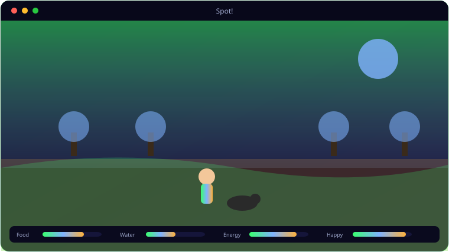

See It In Action
A look inside Spot!.

What It Does
Everything Spot! brings to the table.
🌳
Scrolling Open World
Roam a 3072×1590 world across three connected scenes — Home & Backyard, Park and Neighbourhood — with a camera that tracks you.
📊
Five Needs to Balance
Food, water, energy, happiness and bladder all tick down — let two bottom out and it's game over.
🎯
Twelve Commands
Fetch, Sit, Stay, Lay, Stand, Run, Here, Pet, Good Boy, Wee, and step left/right — Spot has a full state machine.
💩
Wee, Waste & Bin
Bladder fills over time; send Spot to a tree, pick up the waste, and bin it for points.
🐩
A World of Characters
Ten dog breeds, joggers, children, the elderly, cyclists, squirrels and cars all share the streets.
🖼️
Vector Art
Everything is drawn with pygame.gfxdraw anti-aliased vectors — no external assets, crisp at any size.
Get Ready
System requirements.
💻
Minimum
- OS: Windows 10 (64-bit) or Windows 11
- CPU: Dual-core, 2.0 GHz
- Memory: 4 GB RAM
- Graphics: Any DirectX 11 / integrated GPU
- Storage: 250 MB + space for your files
- Display: 1280×768 or higher
🚀
Recommended
- OS: Windows 11 (64-bit)
- CPU: Quad-core, 3.0 GHz
- Memory: 8 GB RAM
- Graphics: Dedicated GPU (optional)
- Storage: SSD with a few GB free
- Display: 1920×1080 or higher
Under the Hood
The details.
| Engine | Python 3.12 + Pygame 2.6.1 (single file, no assets) |
| World | 3072×1590, three scenes, camera tracking |
| Stats | Food, water, energy, happiness, bladder |
| Commands | 12 — Fetch/Sit/Stay/Lay/Stand/Run/Here/Pet/GoodBoy/Wee/Left/Right |
| Platform | Windows 10 / 11 |
Get Spot!.
A 2D dog-walking game — keep Spot happy and out of trouble.
⬇ Download Spot!Spot_Setup.exe · free · Windows 10/11